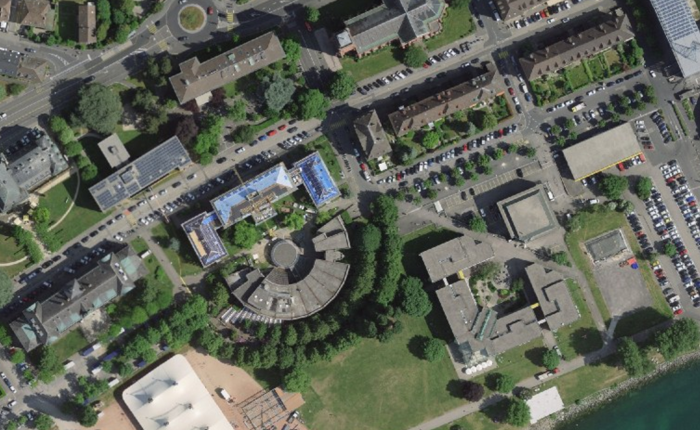

Accueil

Décoration de la bibliothèque
Change la décoration de chaque étage avec les flèches. Les décorations verrouillées se débloquent avec des coins.
R
0
coins
Mes favoris
Tes résumés favoris, rangés par catégorie. Choisis une étagère pour l'ouvrir.
Décoration de la bibliothèque
Change la décoration de chaque étage avec les flèches. Les décorations verrouillées se débloquent avec des coins.
R
0
coins
Tu n'as encore aucun favori. Ouvre la liste des résumés d'une matière et clique sur le signet d'un résumé pour l'ajouter.
0 / 1000 XP
Chaque note reçue sur tes résumés te rapporte de l'XP : de 1 XP (½ étoile) à 10 XP (5 étoiles).
- 0 documents ajoutés
- 0 résumés en favoris
Ta note
Alors, ce résumé ?
Tu as ouvert il y a 10 minutes. Note-le pour aider les autres étudiants.